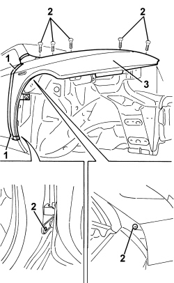

7210E18 R.R. FRONT WING
- Path
- Procedures > 72 PANELS AND FRAMES > 7210 REMOVING-REFITTING > 7210E EXTERNAL PARTS > 7210E18 R.R. FRONT WING
- Kind
- repair procedure (removal / refitting; the operation number is the code)
- Applies to
- all engines; all production periods
- Interactive page
- https://sloeber94.github.io/elrnDB/#/939011407
Applies to: all engines; all production periods
 Removing
Removing
 Refitting
RefittingOp. 7055B54 UNDER ENGINE PROTECTION/GUARD - R.R.
Op. 7055B90 LEFT FRONT WHEEL ARCH LINER - R.R.
- Or, alternatively
Op. 7055B91 RIGHT FRONT WHEEL ARCH LINER - R.R.
1. Protect the corner of the door (1a), the underdoor area (1b) and the base of the front pillar (1c) by applying adhesive tape.
2. Undo the fixing bolts.
3. Remove the wing.

Applies to: all engines; all production periods
Refitting
Removing- Check that the wing is not damaged.
- Position the wing and screw in the bolts without tightening them.
- Check the alignment of the wing with the door and the bonnet lid.
Op. 7025A10 BONNET LID - ALIGNMENT
- Tighten the bolts.
Component | Fastening | dia | Value (daNm) | Validity |
|---|---|---|---|---|
BODYSHELL FRONT WING | Bolt | M6 | 0.7 ÷ 1.1 |
Op. 7055B91 RIGHT FRONT WHEEL ARCH LINER - R.R.
Topics linked from this page (7)
- 7005A14 FRONT SIDE DOOR - ADJUST CENTERING AND MOULDING - INCLUDES ADAPTATION OF HINGES AND SEALS ON DOOR COMPARTMENT
- 7025A10 BONNET LID - ALIGNMENT
- 7055B54 UNDER ENGINE PROTECTION/GUARD - R.R.
- 7055B90 LEFT FRONT WHEEL ARCH LINER - R.R.
- 7055B91 RIGHT FRONT WHEEL ARCH LINER - R.R.
- 7210E10 R.R. FRONT BUMPER
- 7210E20 R.R. BONNET
Topics that link to this page (8)
- 7210A31 R R FRONT SHOCK ABSORBER ATTACHMENT DOME, (ONE) LH OR RH
- 7210A32 R.R. PARTIAL FRONT SHOCK ABSORER TURRET MOUNTING (ONE), LEFT OR RIGHT
- 7210A35 R.R. LOWER FRONT STRUT/SIDE PANEL (COMPLETE) (ONE) LEFT OR RIGHT
- 7210A45 R.R. LOWER FRONT STRUT/SIDE PANEL (LEVEL 2) PARTIAL (ONE) LEFT OR RIGHT
- 7210A46 R R (COMPLETE) UPPER FRONT STRUT (ONE) LH OR RH
- 7210A60 R.R. FRONT PILLAR
- 7210E44 R.R. DOOR SILL RAIL OUTER TRIM
- 7210E45 R.R. PARTIAL DOOR SILL RAIL OUTER TRIM